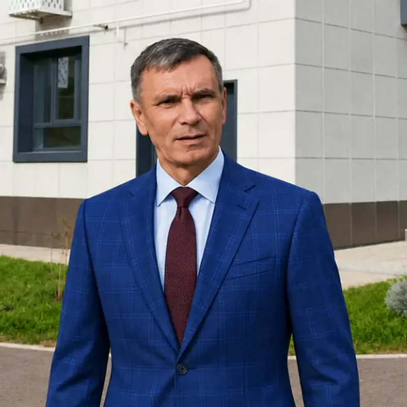
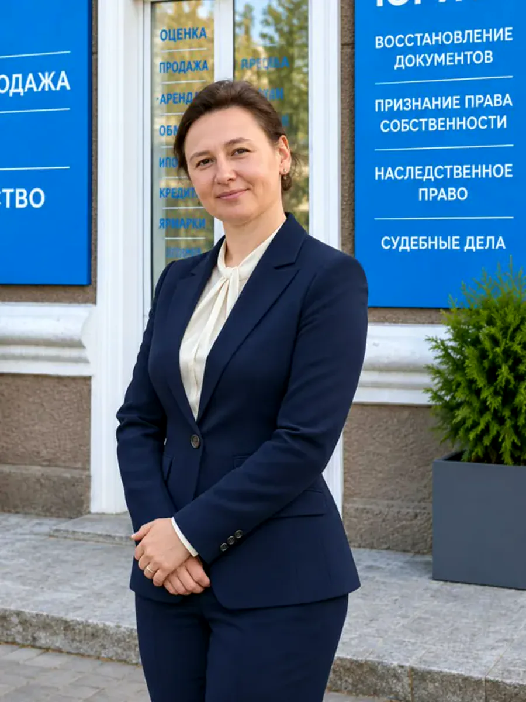
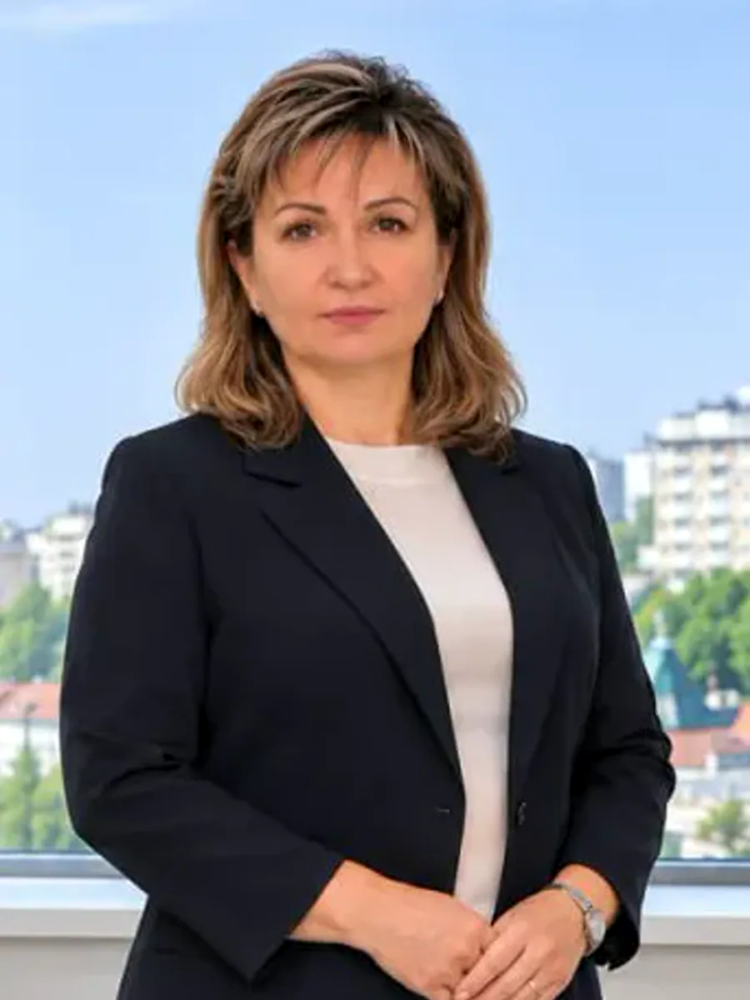
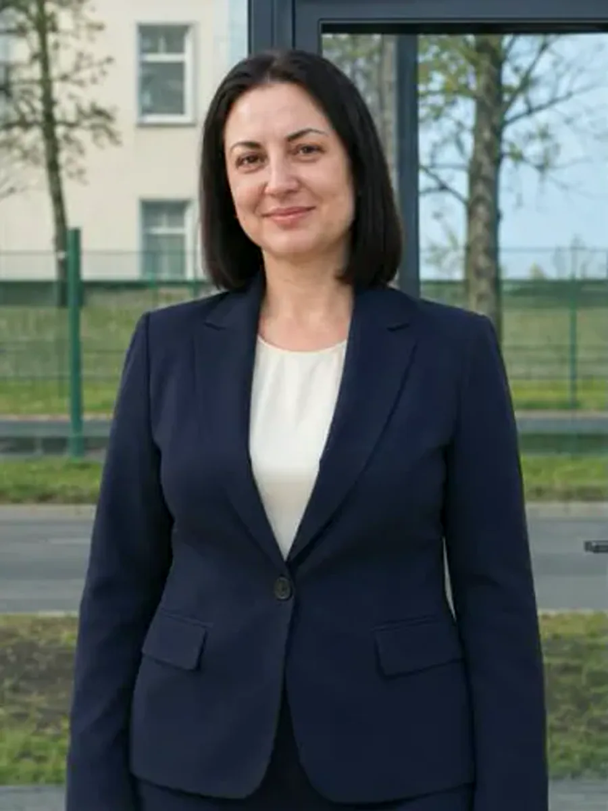
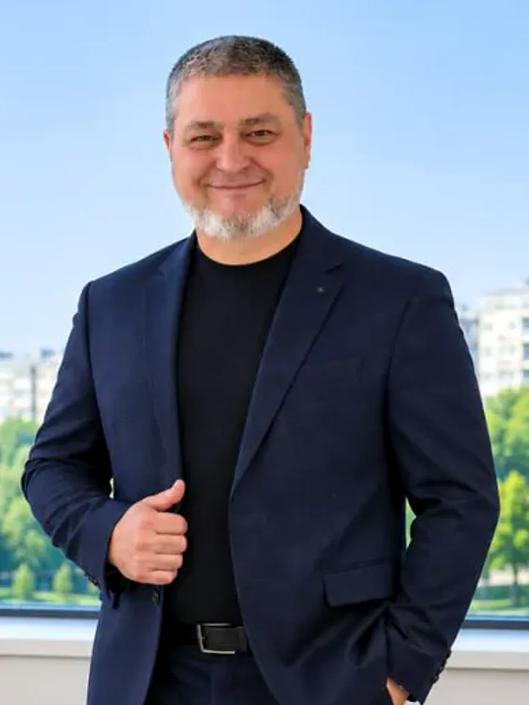

Мы — мультицентр недвижимости в Мариуполе. Более 20 лет опыта. Помогаем жителям города покупать, продавать и арендовать квартиры и дома. Работаем честно, сопровождаем каждую сделку юридически и всегда на связи.

Александр Васильевич работает в сфере недвижимости с 1993 года. Он начинал риэлтором и прошёл путь до руководителя. Опыт работы с клиентами помогает ему выстраивать работу команды и понимать, с какими трудностями люди сталкиваются при оформлении недвижимости.
В 2023 году Александр Васильевич основал мультицентр «Мой дом» в Мариуполе. Он руководит командой и развивает формат «единого окна», чтобы в одном месте клиенты могли получить помощь со сделками, оценкой имущества и оформлением документов.
Наталья Анатольевна 26 лет работает в недвижимости. Она помогает клиентам покупать, продавать и арендовать недвижимость, консультирует и сопровождает сделки.
Опыт Натальи Анатольевны особенно ценен, когда клиент впервые покупает или продаёт недвижимость и не знает, с чего начать.

Юлия Александровна занимается оценкой имущества — от автомобилей до коммерческой недвижимости.
Юлия Александровна — грамотный специалист, который вежливо общается с клиентами.
Анна Владимировна помогает клиентам с покупкой, продажей и арендой недвижимости. Она уточняет, что важно для клиента, и помогает сориентироваться в следующих шагах.
Анна Владимировна — молодой специалист. Она быстро усваивает новую информацию и легко вникает в детали каждого запроса.

Светлана Петровна занимается продажей недвижимости через Авито. Она помогает собственникам представить свой объект покупателям и ведёт работу с откликами на объявление.

Ярослав Александрович — юрист по недвижимости. Помогает разобраться в сложных ситуациях и пройти процедуры без ошибок.

Елена Владимировна помогает клиентам с покупкой, продажей и арендой недвижимости, а также с документами.

Оксана Владимировна помогает клиентам купить, продать или арендовать недвижимость. Она консультирует по вопросам недвижимости и сопровождает клиентов на этапах сделки.

Сергей Александрович помогает клиентам с недвижимостью — от подбора объекта до сопровождения сделки.
У Сергея Александровича большой опыт работы с недвижимостью. С клиентами он общается деликатно и вежливо.